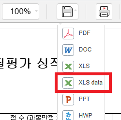
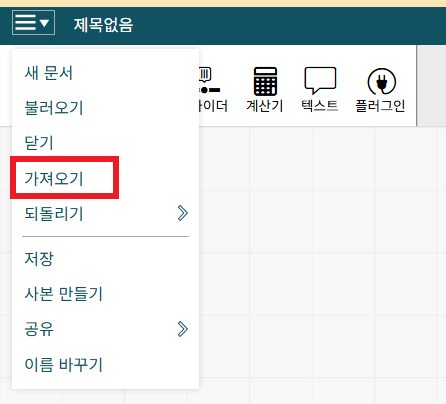
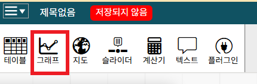
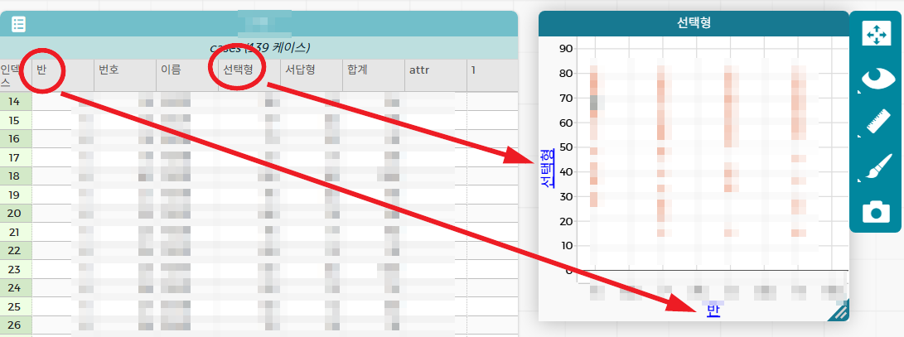
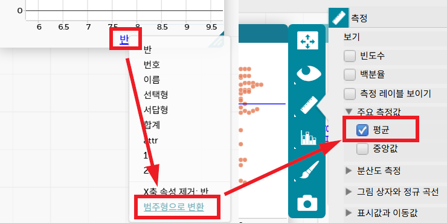

1
자료 정리
①
성적관리에서 파일 다운로드
성적관리 시스템에서 XLS data 형식으로 다운로드합니다.

▲ 저장 형식에서 XLS data 선택
②
반 / 번호 / 익명 이름 열 생성
1/1 형태인 데이터에서 오른쪽 열 2개(반, 번호)와 이름 오른쪽에 열 1개(익명이름)를 먼저 삽입하세요.
아래 수식을 해당 셀에 입력합니다.
반
=LEFT(OFFSET(B2, 0, -1), FIND("/", OFFSET(B2, 0, -1))-1)
번호
=SUBSTITUTE(OFFSET(C2, 0, -2), LEFT(OFFSET(C2, 0, -2), FIND("/", OFFSET(C2, 0, -2))), "")
이름 익명
=REPLACE(OFFSET(E2, 0, -1), 2, 1, "O")
💡
수식 입력 후 셀 우하단 십자가(+)를 더블클릭하면 나머지 행에 수식이 자동으로 채워집니다.
③
값으로 붙여넣기 (수식 → 값 변환)
1
Ctrl + Shift + ↓ 로 전체 열 선택 → 복사
2
같은 위치에 골라붙이기 → 값(V) 으로 붙여넣기 (수식이 숫자/텍스트로 고정됨)
④
데이터 정리 — 필요 없는 열·행 삭제
원본 1/1 형태의 반번호 열, 원본 이름 열 등 CODAP에 불필요한 데이터를 삭제합니다.
⑤
CSV UTF-8 형식으로 저장
CODAP에서 불러올 수 있도록 반드시 CSV UTF-8 형식으로 저장합니다.

▲ 파일 → 다른 이름으로 저장 → 파일 형식: CSV UTF-8 문서 (*.csv) 선택 → 저장
2
CODAP에서 그래프 만들기
①
②
CSV 파일 가져오기
좌상단 메뉴(≡) → 가져오기를 클릭하여 저장한 CSV 파일을 불러옵니다.

▲ 메뉴(≡) → 가져오기 클릭
③
그래프 만들기 — 축에 데이터 드래그
1
상단 툴바에서 그래프 아이콘 클릭
2
테이블에서 반 열 머리글을 → 그래프 가로축으로 드래그
3
테이블에서 선택형(성적 점수) 열 머리글을 → 그래프 세로축으로 드래그

▲ 상단 툴바 → 그래프 아이콘 클릭

▲ '반'을 가로축, '선택형'을 세로축으로 드래그
④
반 데이터를 '범주형'으로 변환 후 평균값 표시
1
가로축 반 레이블 클릭 → 드롭다운에서 범주로 변환 선택
2
우측 패널 붓 아이콘 → 주요 측정값 → 평균 체크

▲ 반 → 범주로 변환 / 우측 패널 → 평균 체크
✅
이제 각 반별로 점수 데이터가 분리되어 표시되고, 평균선이 그래프에 나타납니다.